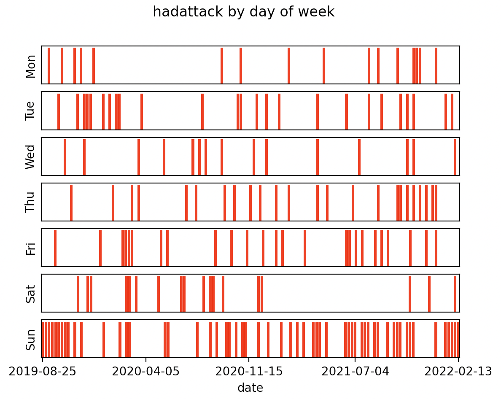
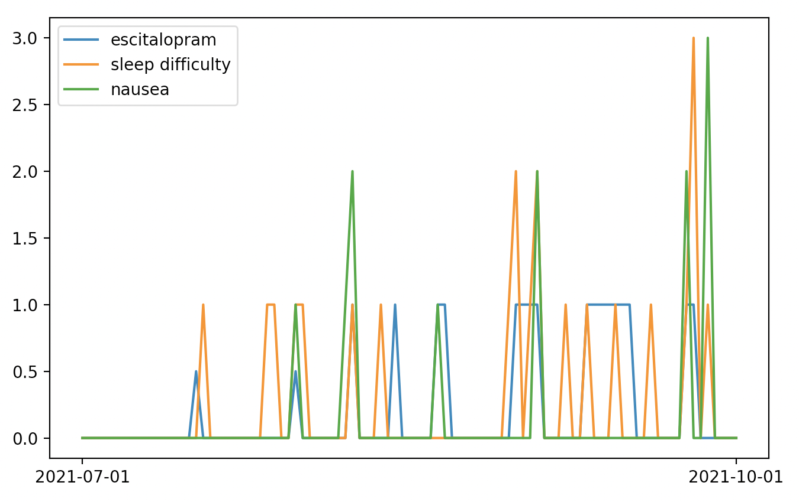
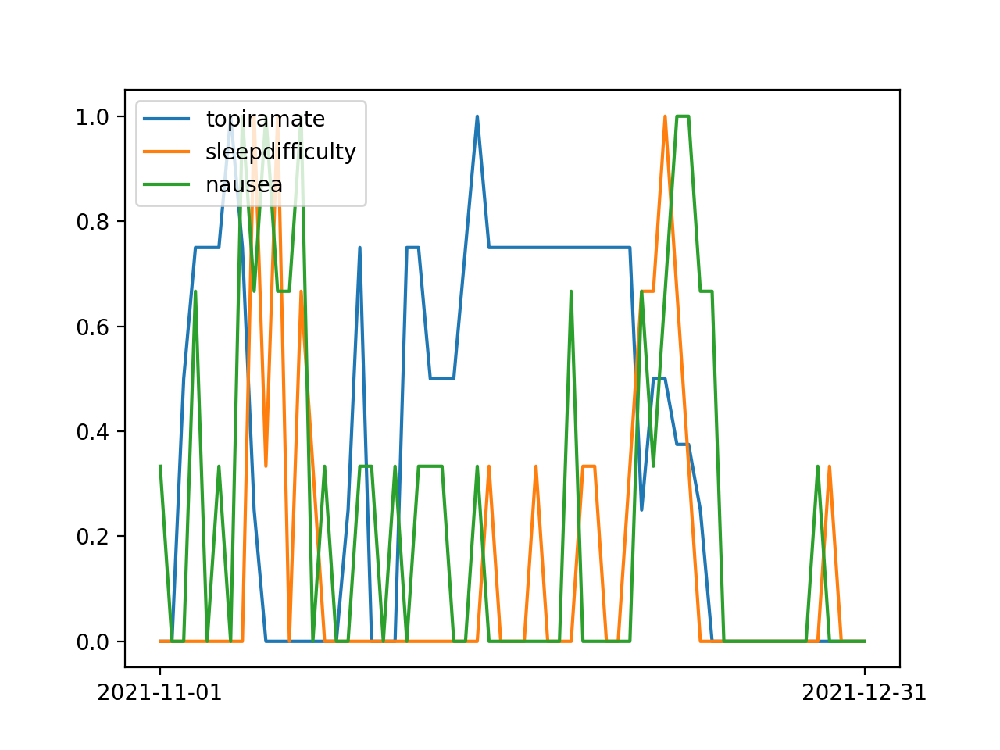

My Health Condition
I have a health problem characterized by pain in my forehead every hour of every day. I also get migraine attacks a few times a week. The migraine attacks started gradually around 2018, and the persistent head pain started more recently. Here are some treatments I have tried: magnesium, sumatriptan, amitriptyline, riboflavin, coenzyme Q10, Nurtec (rimegepant), propranolol, Emgality (galcanezumab), topiramate. I am currently (2021-09-06) writing down my health experiences in a Google sheet, including almost everything I eat, multiple numbers describing my condition, lots of text, and all medication I take. I have written python programs that analyze this data.
Here are some findings:
Attack Frequency by Day of Week
I have been much more likely to have migraine attacks on Sundays than other days of the week. The strength of this has varied from semester to semester. Here I present my findings by 4-month periods:- 2019-09-01 to 2019-12-31: p=0.002; I was more likely to have attacks on Sundays during this period.
- 2020-01-01 to 2020-04-30: p=0.5; I was not more likely to have attacks on Sundays during this period.
- 2020-05-01 to 2020-08-31: p=0.5; I was not more likely to have attacks on Sundays during this period.
- 2020-09-01 to 2020-12-31: p=0.02; I was more likely to have attacks on Sundays during this period, but not as much as during some of the other periods.
- 2021-01-01 to 2021-04-30: p=0.005; I was more likely to have attacks on Sundays during this period.
- 2021-05-01 to 2021-08-31: p=0.0001; I was more likely to have attacks on Sundays during this period.

I do not know what causes these trends.
Propranolol
Propranolol is one of the many medications I have been prescribed. As a nonselective beta blocker, propranolol's primary action is reducing pulse [1][2]. To measure my pulse, I have been using a mobile app called StressCam. This app is old, so its website, stress-cam.com, has been taken down. It only works on my older iPhone and not my newer one.The following image shows that propranolol lowered my pulse. The dosage of propranolol varied.

Propranolol did not correlate significantly with any metric of my headache condition. So I know it affected me, but it did not benefit me. So I am unlikely to try it any more.
Amitriptyline
To anyone taking amitriptyline here is my warning: the withdrawal was 100 times as severe as starting the medication. It is far more difficult to stop this medication than start it.
Escitalpram (Lexapro)
I first took escitalopram against my will in a mental hospital in 2019. In summer 2021, I asked my neurologist for escitralopram because I wanted to gain experience with it on my own terms. My neurologist prescribed 10mg per day at bedtime.Here is what I know about escitralopram's effects on me:
-
Escitalpram causes insomnia. I thought escitralopram was not affecting me until I looked at the output from one of my python programs called offset_spearman.py. This program uses scipy.stats.spearmanr to get the Spearman correlation coefficient and p-value between numerous pairs of attributes with one attribute shifted by a number of days called the offset. The program tries offset values -1, 0, 1, and 2. I have been recording an integer called sleepdifficulty every day. Between 2021-07-01 and 2021-10-01, the spearman correlation coefficient between escitalopram in the evening and sleepdifficulty on that night was 0.38, with p-value 0.0002.
Technical note: This python program treats the days as non-sequential, but days are sequential. So I must consider the sequentiality of the data as a possible cause of significant p-values (it has been the cause in some analyses I have done). Here is some evidence against sequentiality being the cause here:- With this date range, sleepdifficulty does not correlate with itself with offset=1 (from one day to the next).
- None of the other day offsets had a significant p-value.
- Escitalpram causes nausea. For this, I searched my records for the words "nausea" and "vomit" (I often wrote that I "feel like vomiting"). I created a column of integers based on my text records. Between 2021-07-01 and 2021-10-01, the spearman correlation coefficient between taking escitalopram in the evening and nausea the next day was 0.35, with p-value 0.0006. None of the other day offsets have a significant p-value.

Escitalopram did not correlate significantly with any metric of my headache condition.
Topiramate
In April 2021 I asked my neurologist for topiramate and they prescribed it. After trying topiramate for over 6 months, I finally noticed an effect by withdrawing from 75mg per day. Withdrawal from 75mg per day caused sleep difficulty and strong nausea lasting about a week. Here is the graph showing this:
Topiramate taken after noon is counted on the next day in the above graph, representing when the topiramate is in my blood. The highest level of the topiramate line is 100mg, which occurred on 2021-11-07 and 2021-11-28 as I took 4 25mg topiramate tablets on the evening before each of those 2 dates. All 3 lines were normalized to range from 0 to 1.
That graph shows 2 topiramate withdrawals:
- The first withdrawal was because I got sick with a virus starting 2021-11-08. I stopped taking topiramate, incorrectly thinking this was safer than continuing topiramate. When I had the sleep difficulty and intense nausea, I thought it was an effect of the virus. But now I know these were effects of withdrawing from topiramate. The actual effects of the virus were bilateral headache and fatigue which lasted only 3 days. I know it was a virus because others around me were also sick.
- The second withdrawal was because I forgot to take topiramate on the evening of 2021-12-11. I tried to combat the withdrawal with some topiramate, as you can see in the graph. During this withdrawal there were clear mental effects.
Foods
Every day I record a list of foods I eat. I use a python program to analyze this data. As of 2021-10-02, there are no noteworthy correlations between the troublesomeness of my condition and any of more than 50 foods.
Conclusion
I have a history of believing a treatment works for my migraine headaches but deciding it does not work months later. I followed this pattern with magnesium, sumatriptan, Nurtec, propranolol, and topiramate. Currently, I do not know that any treatments have helped my condition. Now that I have followed this pattern multiple times, I am very skeptical when someone says a treatment helped their chronic condition.Here is another graph:
 Click here to go to the index page of my website
Click here to go to the index page of my website